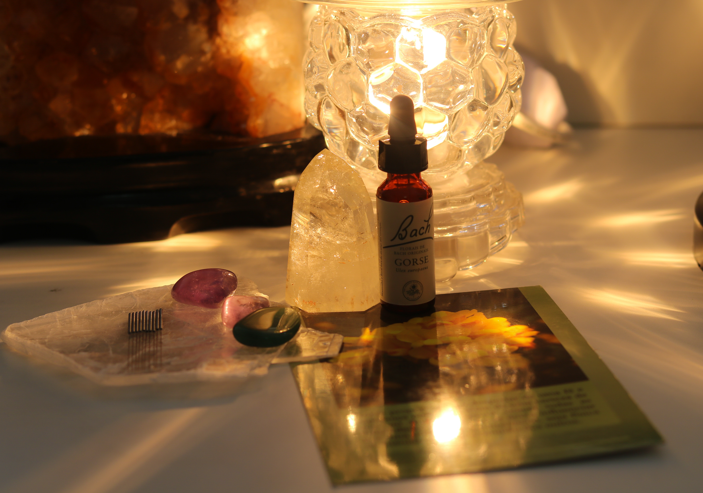
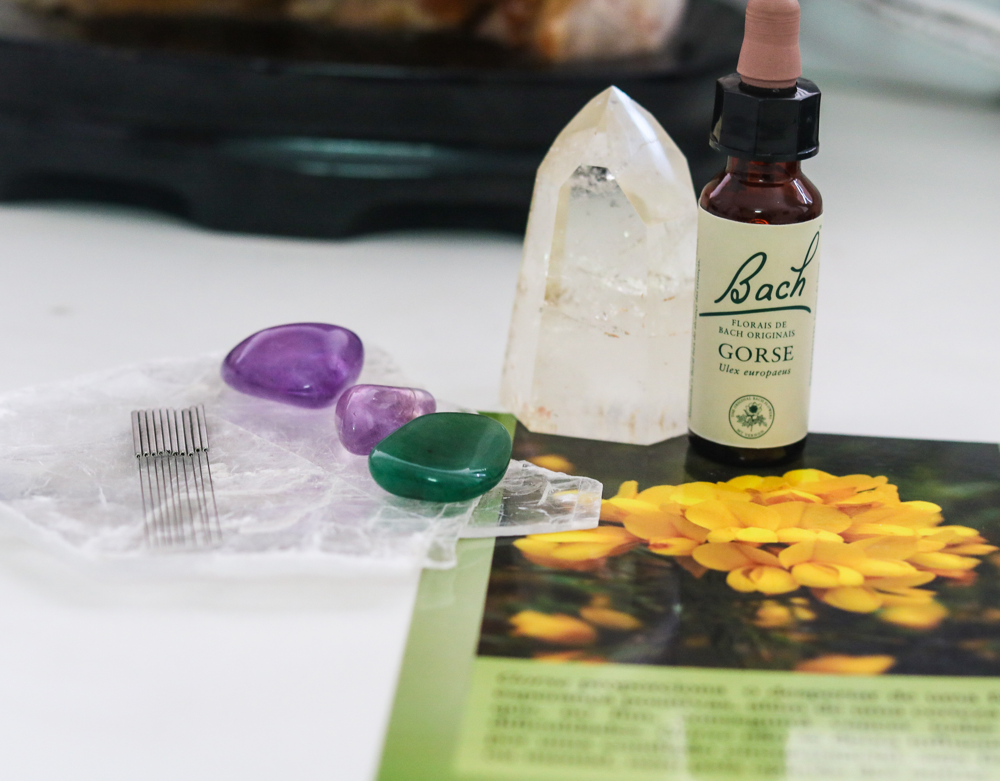

Naturologia
O Naturólogo é um profissional com graduação universitária que reúne conhecimentos das ciências humanas, biológicas e da saúde, estando habilitado para trabalhar com equipes multiprofissionais no auxílio à recuperação e/ou manutenção da saúde.
A Naturologia é uma ciência que estuda métodos naturais antigos, tradicionais e modernos de cuidado, com objetivos de promover, manter e recuperar a saúde, através da estimulação e suporte à inerente energia do corpo, para a melhoria da qualidade de vida, harmonia e equilíbrio do ser humano com o meio em que vive.
Pode-se definir a Naturologia como, conhecimento da área da saúde embasado na pluralidade de sistemas terapêuticos.
A Naturologia se destaca como ciência da área da saúde que trabalha focada no equilíbrio do indivíduo, ou seja, orienta a utilização das terapias naturais para promover o bem-estar e qualidade de vida de forma integral.
